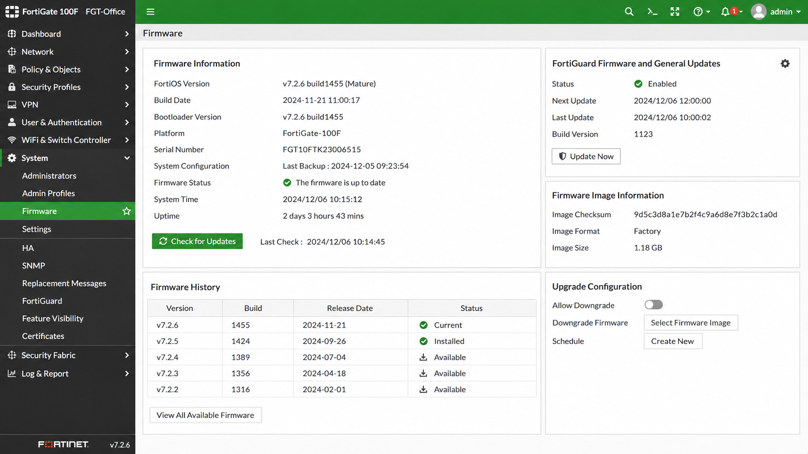

Objective
This check verifies that the firewall firmware is updated and supported.
Outdated firewall firmware can expose the network to:
- Security vulnerabilities
- Remote exploits
- System instability
- Unsupported features
Prerequisites
- Access to the firewall management interface
- User account with read or admin permissions
Verify Firewall Firmware
Open the firewall management interface and verify the firmware version.
 Example: FortiGate → System → Firmware
Example: FortiGate → System → Firmware
Verify that:
- The firewall firmware is up to date
- No outdated or unsupported firmware version is used
- Security services and updates are operational

Result Interpretation
- ✅ OK – Firewall firmware is updated and supported.
- ⚠️ WARNING – Firewall firmware is outdated but still operational.
- ❌ NOK – Unsupported, vulnerable, or obsolete firmware detected.